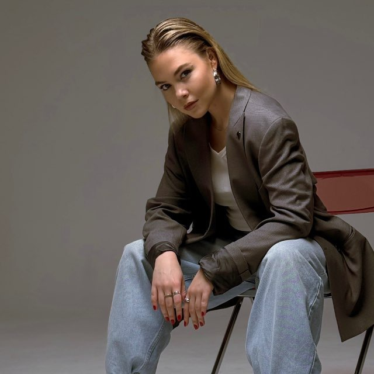
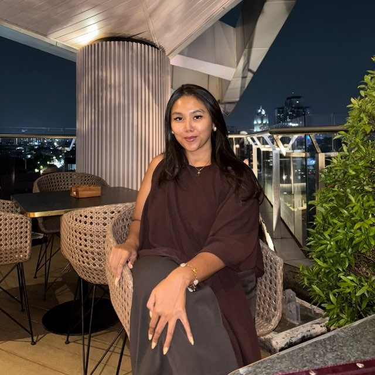
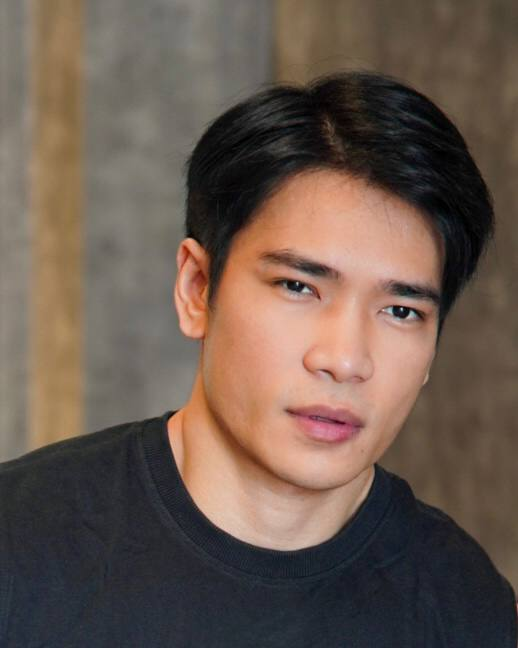
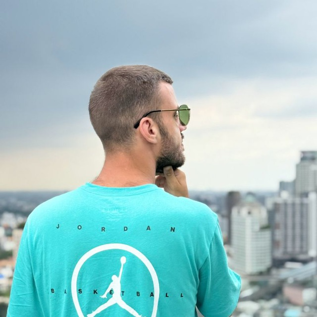
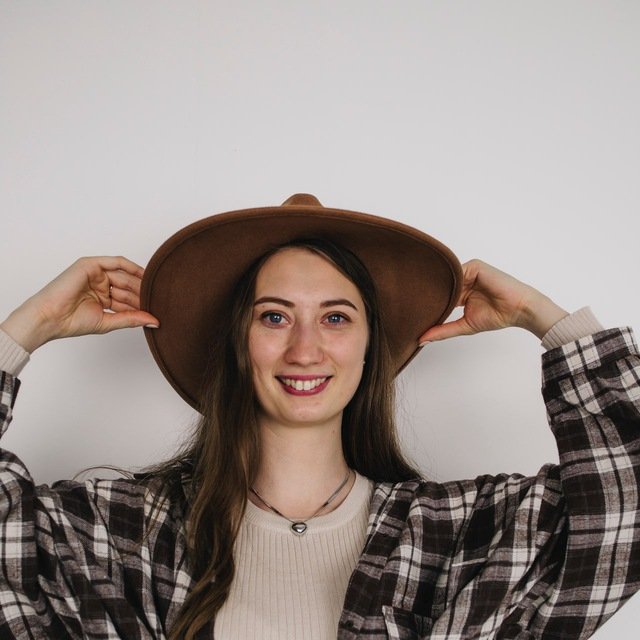

Служение церкви
Мы призваны служить Господу в хвале и поклонении. Это служение престола, которое меняет атмосферу — и приходит духовная победа: в себе, в команде, в церкви.
«Но настанет время и настало уже, когда истинные поклонники будут поклоняться Отцу в духе и истине, ибо таких поклонников Отец ищет Себе»
Иоанна 4:23Суть
Прославление — это служение престола. Через хвалу высвобождается слово, которое должно возбудить веру в человеке. Всё, чем Бог одарил тебя — дары и таланты — не остаётся при тебе: ты высвобождаешь это в зал. А то, какого ты духа, определяет всю твою жизнь и всё твоё служение.
Слово с престола возбуждает веру в человеке.
То, что есть у Бога в тебе — высвобождаешь в зал.
Дух, который в тебе, определяет что ты транслируешь.
Служение меняет твою атмосферу — и атмосферу других.
Структура





Обязанности
Каждый участник команды ответственно подходит к своему служению и вверенной ему роли.
Приходи на репетиции вовремя и готовым, не отвлекайся в процессе.
Следи за состоянием своего духа и помни: атмосфера в команде зависит от тебя.
Каждый отвечает за свою партию — вокальную или инструментальную — и знает её твёрдо.
Ответственный за свой инструмент: расчехлить, собрать, зачехлить, упаковать и убрать.
На вход · онбординг
Всё, с чего начинается путь в служении. Нажми на нужное — раскроется.
Компетенция в команде прославления делится на три вида: духовная, душевная и физическая.
Участвовать в команде хвалы могут члены церкви, которые:
Каждый несёт ответственность за Божью атмосферу в команде — это:
Музыкальный навык, которым ты служишь:
Служение прославления держится на двух крыльях — профессионализм и духовность. Их важно развивать параллельно.
Члены команды в доверии следуют за лидером, который следует за Богом. Решения лидера принимаются с миром, а лидеру помогают в служении.
Отношения между собой строятся на взаимном понимании, любви и почтении.
«Буду возвещать имя Твое братьям моим, посреди собрания буду хвалить Тебя».Псалом 21:23